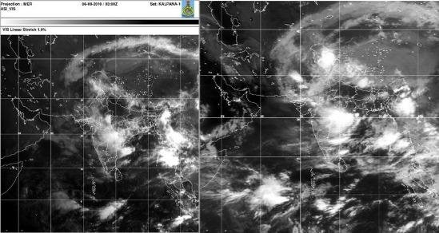

A cloudburst prediction system employs advanced meteorological data analysis and modeling to
forecast sudden, intense rainfall events, aiding in early warnings and mitigation efforts to prevent
flash floods.The time it takes to predict cloudburst varies depending on the sophistication of the prediction system and the complexity of the weather conditions. Advanced meteorological models can provide short-term predictions within hours, but accurate long-term predictions may take several days. While prediction systems have improved, cloudbursts can still be challenging to forecast due to their sudden and localized nature. Therefore, while progress has been made, achieving absolute efficiency in cloudburst prediction remains a
complex and ongoing endeavor in meteorology.

Our Team
AKRITI JHA
ABHAY GUPTA
MOHIT KUMAR
AKSHAT AGRAWAL
PURNASISH PATTNAYAK
BALWANT SINGH CHAUHAN
Purposes
Enhance public safety
Minimize property damage
Optimize resource allocation
Support disaster preparedness
Enable informed decision-making
Contribute to scientific research
Minimize economic impact
Benefits
Early Warning: Provides early alerts, enabling timely disaster response and resource allocation.
Risk Mitigation: Identifies high-risk areas and informs land-use planning to reduce vulnerability.
Resource Allocation: Facilitates efficient deployment of emergency teams and supplies.